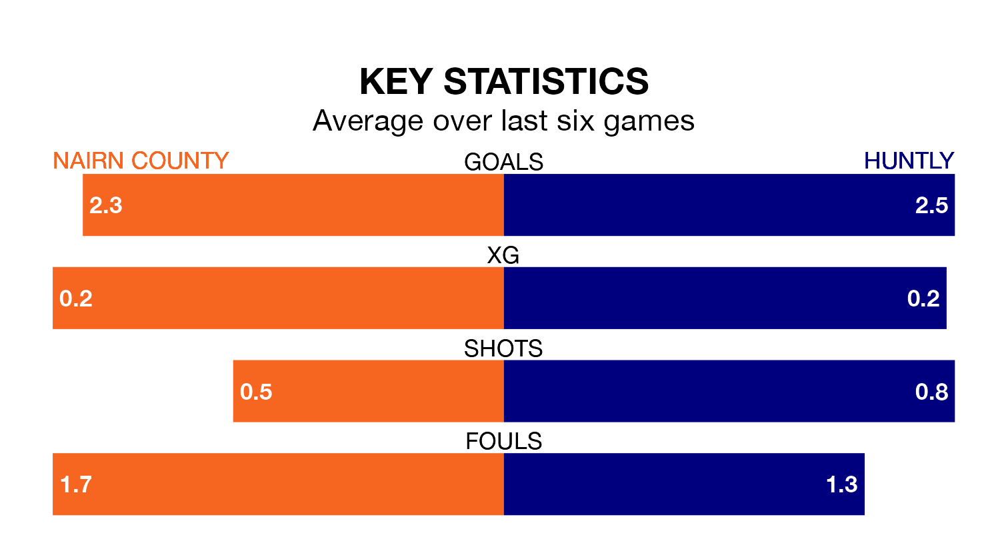

Nairn County host Huntly on Wednesday at Station Park in the Highland Football League.
In their last league match, on February 3, Nairn beat Buckie Thistle 3-0 at home.
Huntly lost, 4-0 away at Turriff United on Saturday.
With 59 goals in 22 games so far this season, Huntly are the league's second-highest scorers with 2.7 goals per game. But they are conceding more than average too, letting in 44 goals at a rate of 2.0 per game.
Nairn are also above average scorers, with 2.0 goals per game, compared to a league average of 1.9. They have conceded 1.6 goals per game.
In the last 10 years, Nairn and Huntly have played each other on 12 occasions. Nairn won nine of them, Huntly two, and they drew once.
On average, Nairn scored 2.8 goals and Huntly 1.8 in those matches.
Their last meeting was on March 11, when Nairn won 2-0 at home.
County are sixth in the table after 21 games, of which they have won 13 and drawn one, earning 40 points.
The away team are two places behind the hosts in eighth, with 11 wins and three draws putting them on 36 points.
Nairn are in mixed form in the Highland Football League, with three wins and a draw from their last six games.
With three wins and three losses over that period, Huntly's form is slightly worse – they have taken nine points from 18, compared to Nairn's 10.
Updated: 09:02 (UTC), 13/02/24